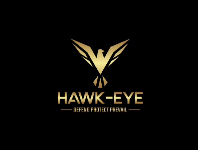

01
Monaco RTL Editor
Write and edit Verilog in a browser-based coding workspace.

VedASICFEATURES
Write and edit Verilog in a browser-based coding workspace.
Send RTL and testbench code to the FastAPI backend and execute Icarus Verilog.
Show compiler errors and simulation output directly in the Studio.
Use VCD traces for visual timing analysis with WaveDrom-compatible data.
Move execution into Docker Linux containers for safer multi-user execution.
Integrate Yosys, OpenLane and Sky130 as the physical-design layer.